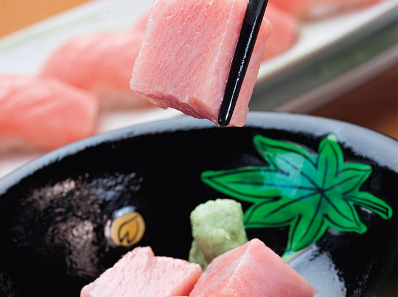
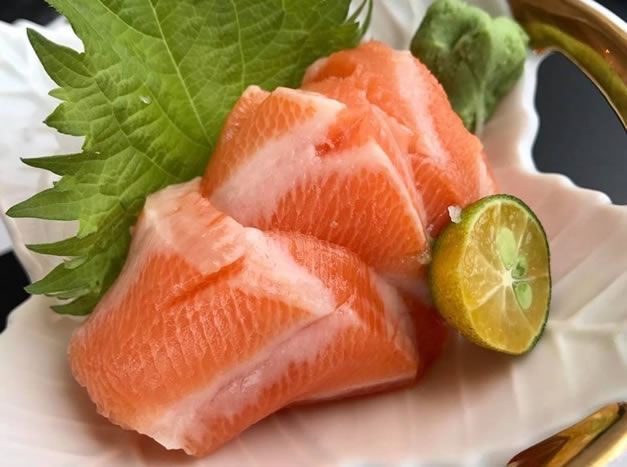
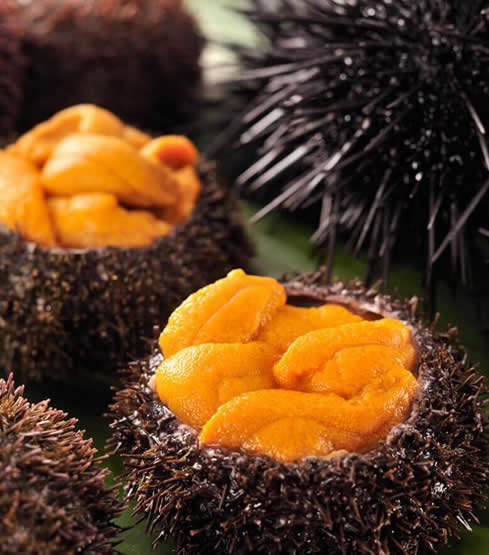
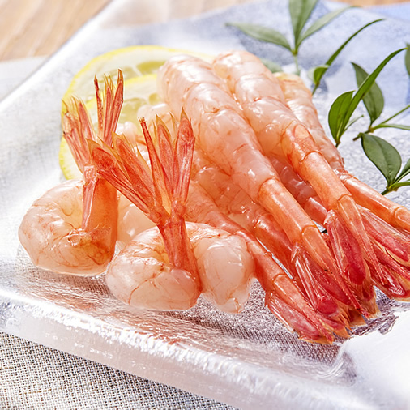
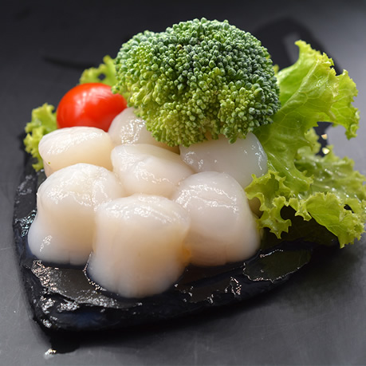
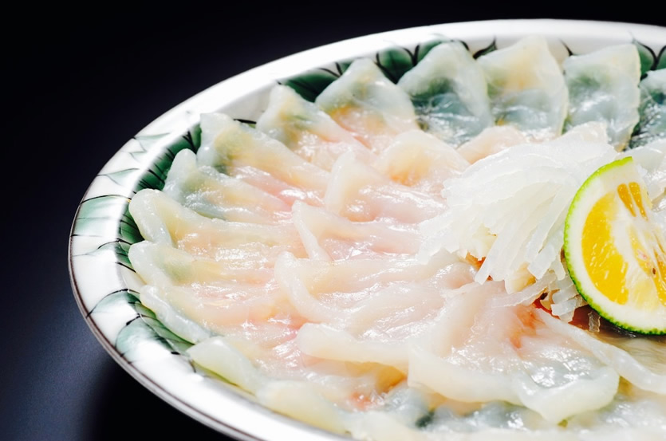

刺身，通常指生魚片，但也可用牛肉、雞肉、馬肉或是任何可以切成片狀食用的材料製作，是一種常見的日本料理。它的做法是以新鮮的未煮的海鮮切成片，蘸醬油、山葵和味噌等調味料食用。
| 鮪 魚 | 鮭 魚 | 海 膽 | 蝦 | 扇 貝 | 河 豚 |

一種海水魚類，屬於鯖科下面的金槍魚族。
本族包含5屬15種鮪魚，各物種之間大小變化很大，最小的鮪魚是圓舵鰹；最大的鮪魚則是北方藍鰭金槍魚。
鮪魚是一種活躍而敏捷的食肉動物，該物種擁有光滑的流線型身體，也是游動速度最快的遠洋魚類之一。
鮪魚常在溫暖海域出現，故而成為一種大量商業捕撈的對象，也是釣魚活動當中的一種受歡迎魚類。
然而由於人類的過度捕撈，藍鰭金槍魚等部分鮪魚物種已深陷滅絕危機。

鮭 魚
鮭魚，有時音譯為三文魚，是人類經常食用的數種鮭形目鮭科鮭亞科輻鰭魚的通稱，
其中主要指棲息於北太平洋的六種太平洋鱒和棲息於北大西洋的一種大西洋鱒。
鮭魚是具有高商業價值的常見食用魚之一，除了漁業捕撈外，在世界各地皆有養殖。

海 膽
海膽是棘皮動物門分類下的一個綱，其正式學名是海膽綱，又名「海刺蝟」。
海膽生活在海洋中，廣泛分佈於世界各地的海洋，從潮間帶至數千公尺的深海底都可發現其蹤跡。
全世界現存約有1,000種海膽，化石700種以上。
人類專食用海膽的生殖腺，即海膽籽。不論生吃或熟食，海膽籽是一種很受歡迎的食材。
海膽在日本稱為「 ウニ Uni」，海膽以海帶為食造成養殖海帶賣相不佳，早期被視為海帶養殖業的害蟲。
直到二戰後，日本人發現海膽的美味，開始以海膽為食材用於壽司與蓋飯上，或直接生食、烤來吃。

蝦
蝦，俗稱蝦子，是多種生活在水中的長身甲殼亞門節肢動物的共同泛稱，其具體語意可變。
一般語境中蝦多指軟甲綱十足目下的真蝦下目與枝鰓亞目；在較嚴格的語境中可能僅指代真蝦下目或其中的更少部分；
而許多名稱中帶有「蝦」的軟甲綱動物並不在此範圍，如磷蝦屬磷蝦目。
許多不同的文化使用蝦作為食物。蝦既可以作為調味品，又可以作為一道菜的主料。
大的蝦在加工前一般要將頭、身上的殼和尾去掉。蝦肉有很高的鈣和蛋白質的含量，而含的熱量則比較小。

扇 貝
扇貝科，又稱海扇蛤科，俗稱元貝，是海扇蛤目海扇蛤總科下的一個科，
其下的生物附著在淺海岩石或沙質海底生活。扇貝的品種很多，全世界海洋都有。
很多扇貝作為美食食用，其貝柱（或稱珧柱、瑤柱）與俗稱帶子的櫛江珧類似，但價格相去甚遠。
色艷鮮艷輻射狀花紋的扇貝受收藏者喜愛，花紋被採納為藝術品的圖案。

河 豚
河魨常作河豚，一般泛指魨形目中二齒魨科、三齒魨科、四齒魨科以及箱魨科所屬的魚類。
河魨普遍具有膨脹身體的能力，能夠將大量的水或空氣吸入極具彈性的胃中，使身體大小膨脹數倍，以嚇阻掠食者。
同時，大多數四齒魨科以及箱魨科的河魨，分別具有劇毒河魨毒素及箱魨毒素，依品種分佈於不同部位，毒性並隨季節有所變化。
河魨肉極度美味，常有美食家因河豚料理不當或品種不分，造成意外中毒死亡。
現在河魨的研究以日本研究最深，在日本，河魨的料理均需嚴格訓練領有執照的廚師才能夠進行。
日本已養殖出無毒河魨。養殖則以中國大陸為大宗，每年皆飼養輸出大量河魨至日本等地。